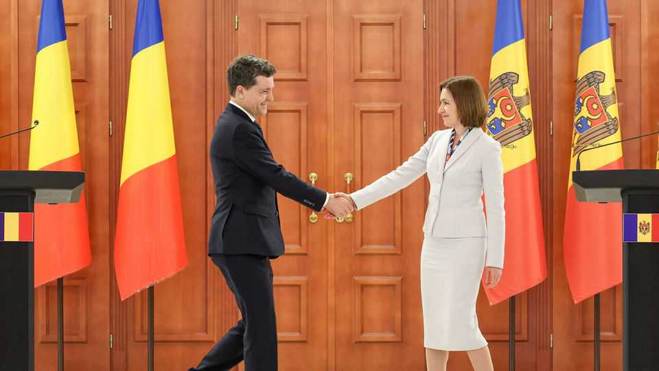
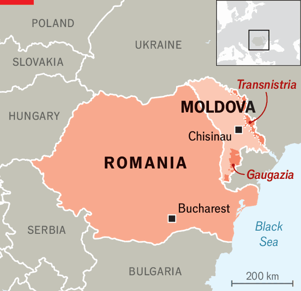

Might Moldova merge with Romania?
Its leaders are starting to mention an alternative route to joining the EU

Aug 13th 2026
Could Moldova disappear? It has happened before: in 1918, just after separating from the collapsing Russian Empire, Moldova’s parliament voted to join neighbouring Romania. Today the country aims to join the European Union by 2030. But recently its leaders have suggested that if the EU blocks that, then it might unify with Romania, which is already a member.
Maia Sandu, Moldova’s president, has said she would vote “yes” in a referendum on union with Romania. Eugen Osmochescu, a deputy prime minister, has called it “Plan B”. Nicusor Dan, Romania’s president, is a unionist, as are several other Romanian politicians. Most Moldovans speak Romanian, and most of its territory belonged to Romania between 1918 and 1940.

There is a realistic possibility that Moldova could complete the EU’s accession demands by 2029. There is also a realistic possibility that French Eurosceptics will stop it anyway. France’s constitution requires a referendum or the approval of three-fifths of both houses of parliament before assenting to let new countries into the EU. Moldova is unlikely to win either. Besides, by 2029 Marine Le Pen, a hard-right nationalist who opposes enlargement, may be president. That heightens the allure of the East German option: getting in by fusing with a neighbour.
In Romania polls show backing for union at around 70%, and in Moldova around 40%. Moldovan support has doubled over the past decade, says Iulian Groza, the director of the Institute for European Policies and Reforms, a think-tank. The country has a population of some 2.9m; an estimated 850,000 (including those living abroad) have Romanian citizenship. That is more pragmatic than ideological, as it enables them to work in the EU. But pragmatism may also convince them to forgo independence in favour of EU and NATO membership inside Romania. In the meantime many vote in Romanian elections, and helped elect Mr Dan.
Union is not on the near-term agenda, says Rufin Zamfir, a Romanian communications expert. Moldovan leaders’ statements “should be interpreted as an indirect message to European partners”. If the prospect of membership is postponed or watered down, he says, “the credibility of Plan B increases...[and] becomes a political variable that Brussels cannot ignore.”
Union would not be simple. Romania is not wealthy enough to subsidise unification as West Germany did. Moldova is poor and lacks control over Transnistria, a pro-Russian breakaway statelet. A 1994 agreement with the Gagauz, a pro-Russian minority, gives them the option of independence if Moldova ever joins Romania.
Yet these issues may not be unresolvable. In its current straits, Russia can offer little support to Transnistria or Gagauzia. Already, because of Moldova’s trade agreement with the EU, 70% of Transnistria’s exports go to Europe. Gagauzia’s population of 100,000 is scattered over four separate enclaves. Independence surrounded by EU borders would not be an enticing option.
Moldova is not the only candidate for disappearing. Large majorities in Albania and Kosovo, which is mostly ethnic-Albanian, favour uniting the countries. Albin Kurti, Kosovo’s acting prime minister, supports fusion, but Edi Rama, Albania’s prime minister, does not; he thinks the issue will be solved when both join the EU. The two leaders detest each other, and have whipped up clashes that have begun to divide their populations. It is unlikely but not inconceivable that within ten years, to achieve EU membership, Moldova will give way to a Greater Romania. A Greater Albania is harder to envisage.■